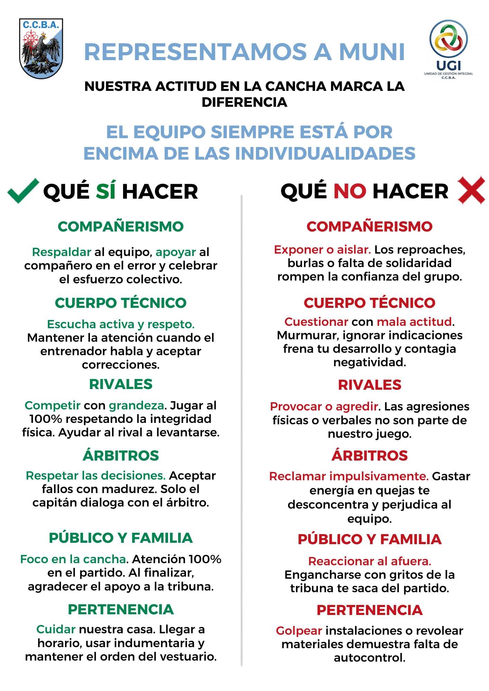

Entrenamiento Mental
Desde la Unidad de Gestión Integral (UGI) del Club Ciudad de Buenos Aires, impulsamos el programa de Entrenamiento Mental con un propósito institucional claro: profesionalizar el "entrenamiento invisible" de nuestros deportistas.
Como un órgano técnico transversal, nuestra misión es liderar la transformación cultural del club mediante tres pilares fundamentales:
- Capacitar a nuestros profesores: Buscamos que los entrenadores evolucionen de ser instructores técnicos a convertirse en facilitadores proactivos del desarrollo neurocognitivo y social, utilizando para ello herramientas comprobadas de ingeniería conductual.
- Crear estrategias de integración: Nos basamos en el Diseño Universal para el Aprendizaje (DUA) para garantizar que la inclusión sea una práctica real y operativa en el día a día, implementando apoyos visuales y protocolos de adaptación progresiva.
- Liderar ideas sobre el manejo de emociones y valores: Aplicamos la Psicología Cognitivo-Conductual para enseñar habilidades socioemocionales, tales como tolerar la frustración y regular el enojo, con la misma rigurosidad técnica con la que se enseña la táctica deportiva.
A continuación, presentamos los lineamientos que fundamentan nuestras herramientas visuales de campo:
ADN Ciudad: Liderazgo UGI

Ser capitán en nuestras disciplinas es un servicio y una gran responsabilidad que trasciende el hecho de llevar una cinta deportiva. A través de nuestro programa, formamos líderes capaces de gestionar el estrés del equipo para que sean los máximos representantes del "Modelo Ciudad".
- El Termostato del Equipo: Enseñamos a nuestros capitanes a ser reguladores activos del clima grupal. El líder debe ser un termostato que transforma positivamente su entorno, y no un termómetro que simplemente reacciona a los problemas.
- Gestión Emocional y Neurociencia: Brindamos herramientas científicas para evitar el "secuestro amigdalino", un fenómeno neurobiológico donde la ira apaga el razonamiento lógico del jugador. Mediante la técnica de las "3 R de la Regulación" (Reconocer, Regular la fisiología y Refocalizar), el capitán ayuda a que el equipo mantenga la calma bajo máxima presión.
- Comunicación Profesional: Establecemos reglas claras donde el vínculo con el árbitro debe mantenerse estrictamente en el diálogo técnico. Se exige una competitividad máxima pero íntegra frente al rival, junto con una comunicación asertiva hacia el propio equipo.
- Medición y Escuela de Capitanes: El desempeño del liderazgo se evalúa mediante Indicadores Clave de Desempeño (KPIs), buscando reducir las sanciones innecesarias y promover la cohesión del vestuario. Todas estas temáticas formarán parte de nuestra "Escuela de Capitanes", un espacio de capacitación focalizado en la toma de decisiones y la resolución de conflictos.
La Cultura del Jugador: Qué Sí y Qué No

Nuestra actitud en la cancha es lo que verdaderamente marca la diferencia. Desde la UGI entendemos que el comportamiento es una respuesta que se entrena constantemente. Por ello, fijamos expectativas claras donde el equipo siempre debe estar por encima de las individualidades.
- Compañerismo Innegociable: El mandato principal es respaldar al compañero en el error y celebrar el esfuerzo colectivo. Quedan absolutamente fuera de nuestra cultura los reproches, las burlas o las actitudes que expongan y rompan la confianza del grupo.
- Respeto al Cuerpo Técnico: Exigimos escucha activa de parte de los jugadores. Cuestionar con mala actitud, murmurar o ignorar indicaciones frena el desarrollo del deportista y contagia negatividad.
- Grandeza ante Rivales y Árbitros: Exigimos competir al 100% pero siempre cuidando la integridad física del otro. Las agresiones físicas o verbales no son parte de nuestro juego. Asimismo, las decisiones arbitrales se deben aceptar con madurez, sabiendo que reclamar de manera impulsiva es un desgaste de energía que perjudica a todo el plantel.
- Foco y Sentido de Pertenencia: El jugador debe mantener su atención plena en la cancha, sin engancharse con los gritos o reacciones de la tribuna. Además, cuidar las instalaciones de nuestra institución exige llegar a horario, usar la indumentaria correspondiente y jamás descargar la frustración dañando los materiales del club.
Desde la UGI, trabajamos día a día para que el Club Ciudad de Buenos Aires se consolide como la principal referencia nacional en formación deportiva e inclusión. Estamos convencidos de que potenciar la calidad humana es el camino definitivo hacia la excelencia deportiva.